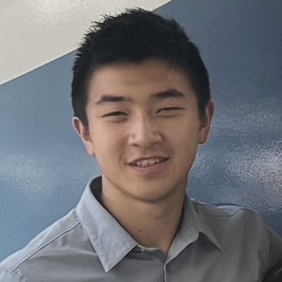
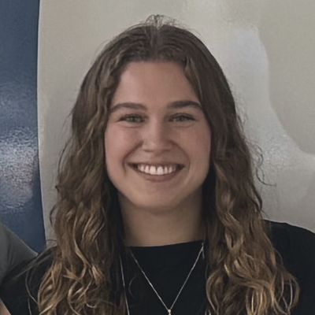
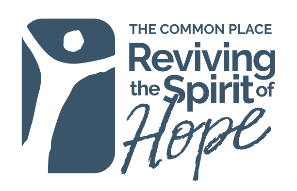

Who runs Shared Vision
-

Eric Lee
Co-founder
Eric Lee graduated from the University of Pennsylvania with a Bachelor of Arts in Biochemistry and Biophysics and a Master of Science in Chemistry. He is one of the co-founders of Shared Vision, which seeks to provide comprehensive eye care and coordination of social needs for Philadelphia’s underserved populations. As an undergraduate, Eric conducted research spanning basic science, social policy, and clinical outcomes in the Children’s Hospital of Philadelphia, Philadelphia Association of Community Development Corporations, and Aravind Eye Hospital in India. He most enjoys creating conversations between physicians and shelters around Philadelphia, and he hopes that Shared Vision will eventually expand its reach to other cities and university health systems. In his free time, Eric likes running along the Schuylkill River.
-

Janine Haros
Co-founder
Janine Haros graduated from the University of Pennsylvania with a Bachelor of Arts in Health & Societies: Public Health and a minor in Chemistry. In college, she supported pediatric gene therapy clinical trials at the Children’s Hospital of Philadelphia and volunteered at a free medical clinic in West Philadelphia. As a cofounder of Shared Vision, Janine is most looking forward to hosting educational workshops and helping patients access eye care. In her free time, Janine enjoys creating pottery and visiting National Parks.
-
Justin Wang
Co-founder
Justin Wang graduated from the University of Pennsylvania in 2026 with a Bachelor of Arts in Biology. He was born and raised in Seattle, Washington (go Seahawks!) and was formerly a competitive swimmer. Throughout undergrad, Justin volunteered with various organizations including Service Link, Shelter Health Outreach Program, and Center for Surgical Health, through which he developed a passion for healthcare advocacy and community-based initiatives. As one of the co-founders of Shared Vision, he hopes to not only increase accessibility to vision screenings but also support patients throughout the care continuum to receive care and achieve long-term health. In his free time, Justin enjoys working out and exploring the Philadelphia food scene.
Why we started Shared Vision
Visual impairment costs the world over $400 billion, and for an individual, it makes the difference between self sufficiency and the loss of personal agency. In shelters across Philadelphia, we have listened to human beings describe how treatable conditions robbed them of their eyesight and their jobs, leading to eviction and homelessness. Yet we also found that eye health was overlooked due to the prioritization of competing survival needs, including food and shelter. We have a shared vision to break this vicious cycle for as many people as possible.
How we help
Our mission is to extend comprehensive vision care to unhoused communities with the EYE framework:
-
Evaluate
Provide accessible eye exams that screen for the leading causes of blindness, including cataract, diabetic retinopathy, glaucoma, and age-related macular degeneration.
-
Yield
Ensure that people receive the care they need by assisting with insurance coverage, transportation, and coordination of eye health appointments.
-
Educate
Promote eye health workshops and informational flyers that keep people accountable for their vision.
Philadelphia is where our journey begins. Stay with us as we set our sights beyond!
Our partners
Clinic partners
-
It runs the eye van and the free screenings at each stop.
-
This team of students and staff helps people with urgent needs, like food, housing and safety.
-
Its student volunteers help people get health insurance, food, rides and other basic needs.
Community partners
-
Chosen 300 Ministries
Map number 1: West Philadelphia
Map for Chosen 300 Ministries, West Philadelphia, opens a new page
3959 Lancaster Ave, Philadelphia, PA 19104Map number 2: Spring Garden
Map for Chosen 300 Ministries, Spring Garden, opens a new page
1116 Spring Garden St, Philadelphia, PA 19123
-

The Common Place
Map number 3: 5736 Chester Ave, Philadelphia, PA 19143
Map for The Common Place, opens a new page
-
Bethesda Project’s Our Brothers’ Place
Map number 4: 907 Hamilton St, Philadelphia, PA 19123
Map for Bethesda Project’s Our Brothers’ Place, opens a new page
Google Maps, about 1 MB of data
Thank you
We’d like to thank Dr. Rithambara Ramachandran, Dr. Lama Al-Aswad, Andrea McCord, Isabelle Deng, Dr. Alan Dogan, Jeremiah Anandarajah, Pastor Chris Holland, Kharisma Golden, Pastor Meagan Esterby, Erin Linden, Dr. Dwight Stambolian, Dr. Bennie Jeng, Dr. Heather Klusaritz, Charlese Hawkins-Hatton, August Wilson, and Service Link for their deep care and unending support.